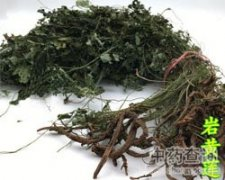

岩黄连

拼音
Yán Huánɡ Lián
别名
岩胡
来源
为罂粟科植物岩黄连的根。秋后采。
生境分布
生于山岩上。分布贵州。
药材特点
多年生草本。根倒圆锥形，肉质。茎单一或丛生，高15～20厘米。叶互生，基生叶柄较长：叶片革质，羽状复叶，小叶片3深裂或3浅裂，最后裂片先端圆钝，或微有浅裂。总状花序顶生。蒴果线形，膜质，黄色，成熟时2瓣裂。种子细小。
性状
性状鉴别 根类圆柱形或贺锥形，稍扭曲，下部有分枝，直径0.5-2cm。表面淡黄色至棕黄色，具纵裂纹或纵沟，栓皮发达易剥落；质松，断面不整齐，似朽木状，皮部与木部界限不明显，完整者二回羽状分裂，一回裂片5枚，奇数对生，末回裂片菱形或卵形。气微，味苦涩。
性味
苦，凉。
功能主治
清热解毒，利湿，止痛止血。
用法用量
内服：煎汤，3-15g。外用：适量，研末点患处。
化学成分
全草含小檗碱（berberine），消旋卡文定碱（cavidine），去氢卡文定碱（dehydrocavidine），消旋岩黄连碱（thalictrifoline），左旋-13β羟基金罂粟碱（13β-hydroxystylopine），右旋四氢掌叶防已碱（tetrahydropalmatine），左旋四氢非洲防已碱（tetrahydrocolumbamine），原阿片碱（protopine），斯氏紫堇碱（scoulerine），白屈菜红碱（chelerytrine）等生物碱。
药理作用
1：无药理作用数据
摘录
《中药大辞典》